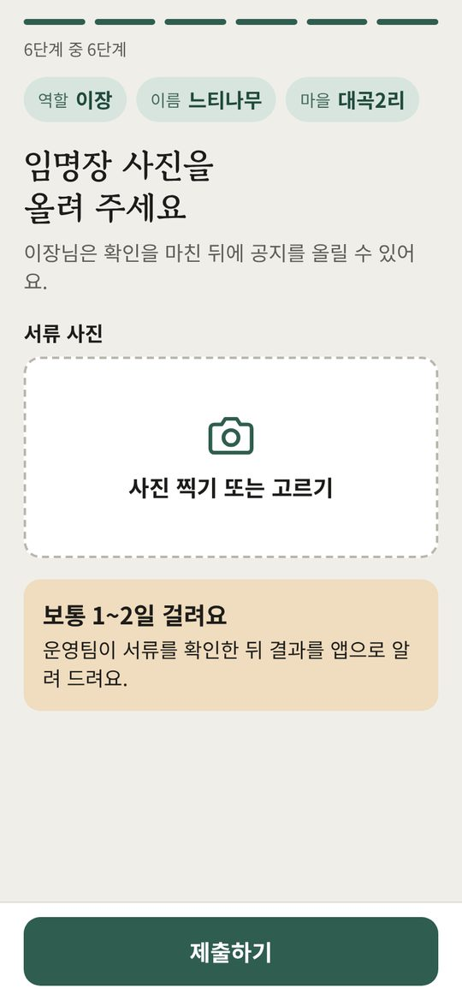
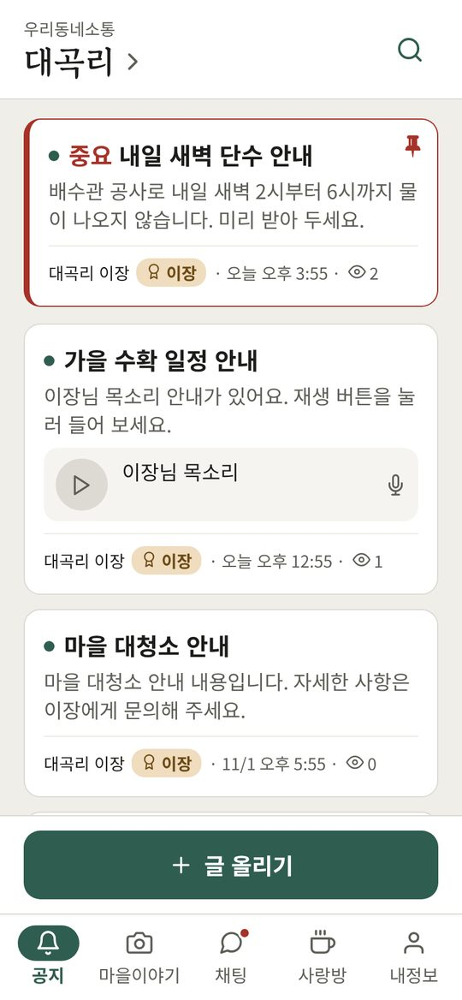
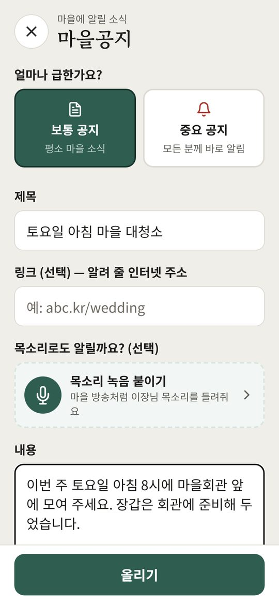
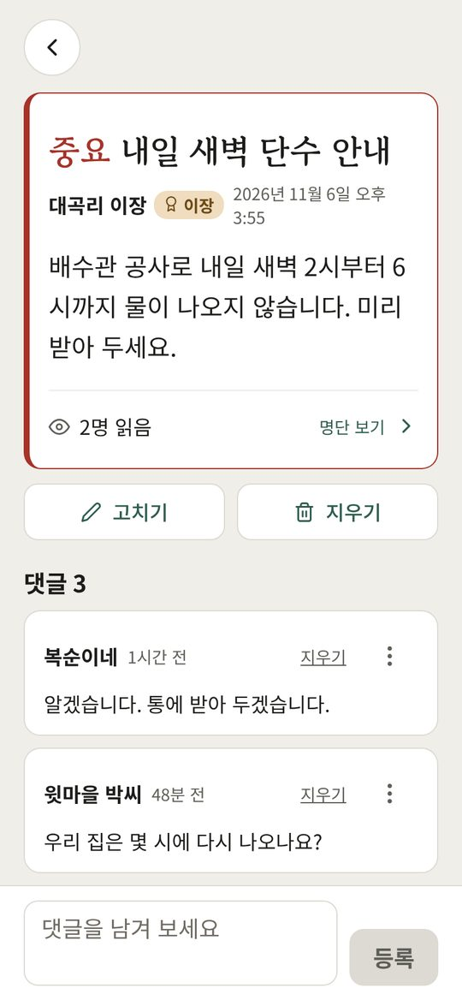
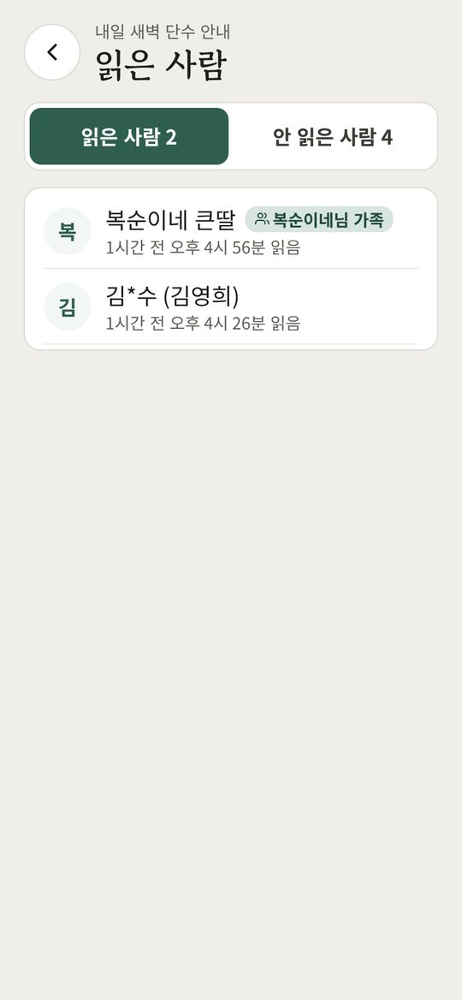
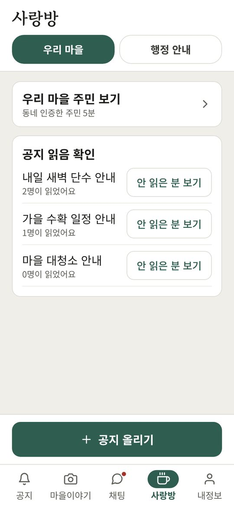
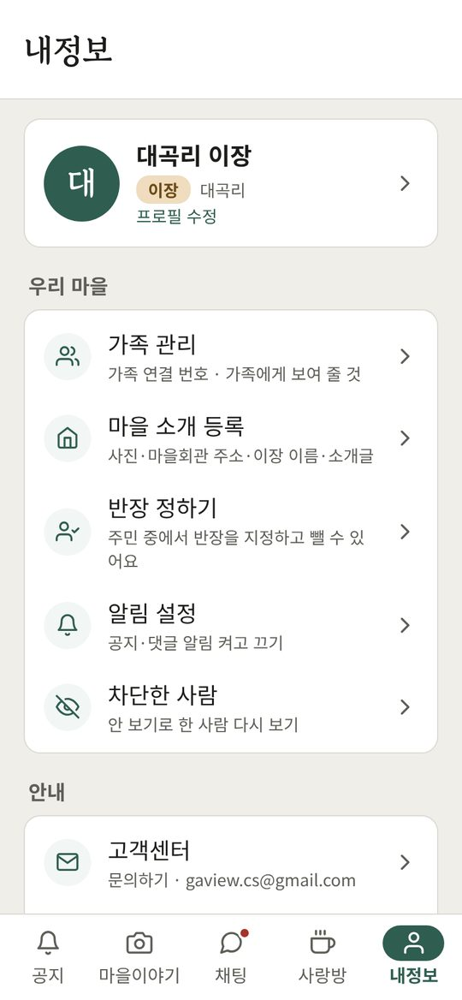
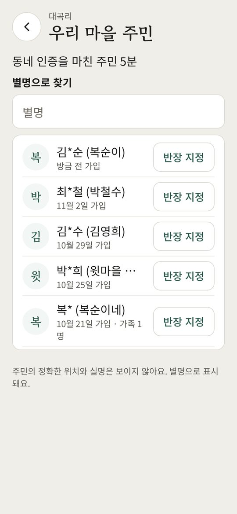

처음 시작하기
임명장을 미리 준비해 주세요. 사진을 찍어 올립니다.
- 안내받은 방법으로 앱을 설치하고 우리동네소통 앱을 엽니다.
- 카카오, 네이버, 구글 중 평소 쓰는 계정으로 시작합니다.
- 이장을 고르고 다음을 누릅니다.
- 마을에서 쓸 이름(별명)과 이름을 적습니다.
- 약관에서 모두 동의합니다 → 동의하고 다음을 누릅니다.
- 현재 위치로 마을 찾기를 눌러 맡은 마을을 고릅니다.
- 사진 찍기 또는 고르기로 임명장 사진을 넣고 제출하기를 누릅니다.


승인을 기다릴 때
- 확인은 보통 1~2일 걸립니다. 앱을 닫아 두어도 됩니다.
- 결과 확인하기를 누르면 지금 상태를 볼 수 있습니다.
- 서류가 맞지 않으면 사유를 보고 다시 제출하기를 누릅니다.
- 임명장 사진은 심사가 끝나면 바로 지웁니다.
아래쪽 탭 보기
공지마을 공지를 보고 글 올리기로 새 공지를 올립니다.
마을이야기주민의 사진과 이야기를 봅니다.
채팅마을 사람들과 대화합니다.
사랑방우리 마을(주민 명단·읽음 확인)과 행정 안내가 있습니다.
내정보마을 소개, 반장, 가족 연결, 알림 설정을 관리합니다.


공지 올리기
- 공지 탭의 글 올리기를 누릅니다.
- 보통 공지나 중요 공지를 고릅니다.
- 제목과 내용을 적습니다.
- 필요하면 목소리 녹음 붙이기, 사진(4장까지), 링크를 넣습니다.
- 올리기를 누르면 주민과 가족에게 알림이 갑니다.


목소리로 알리기
누르고 말씀하세요 버튼을 누르고 말씀합니다. 5분까지 녹음되고, 다 하면 한 번 더 누릅니다. 목소리를 붙이면 내용은 비워도 됩니다.
중요 공지는 끌 수 없는 알림으로 갑니다. 단수·정전·재난처럼 꼭 알려야 할 때만 쓰세요.
↑ 다른 차례 보기
누가 읽었는지 확인하기
- 공지를 열고 아래쪽 ○명 읽음을 누릅니다.
- 읽은 사람과 안 읽은 사람을 봅니다. 가족은 ○○님 가족으로 보입니다.
- 안 읽은 분께는 전화나 방송으로 한 번 더 알려 주세요.




우리 마을 관리하기




반장 정하기
내정보 → 반장 정하기에서 주민 옆 반장 지정을 누릅니다. 5명까지 정할 수 있고, 반장도 공지를 올릴 수 있습니다.


마을 소개
내정보 → 마을 소개 등록에서 사진, 마을회관 주소, 소개글을 넣고 저장하기를 누릅니다.
행정 안내 받기
사랑방 → 행정 안내에서 면사무소 글을 읽고, 알릴 내용이면 내 마을 공지로 가져오기를 누릅니다. 쉬운 말로 고친 뒤 올립니다.
↑ 다른 차례 보기이장님의 가족 연결
내정보 → 가족 관리 → 연결 번호 만들기를 누르면 숫자 6개가 나옵니다. 가족이 30분 안에 앱에 넣으면 연결됩니다.

그만두려면 나를 지켜보는 가족에서 연결 끊기를 누릅니다.
↑ 다른 차례 보기꼭 알아 두실 점
이장이나 반장이 30일 넘게 앱에 들어오지 않으면 자격이 풀릴 수 있습니다. 가끔이라도 앱을 열어 주세요.
- 이장을 그만둘 때는 프로필 수정 → 역할 → 그만두기. 되돌릴 수 없습니다.
- 그만두기 전에 반장을 정해 두면 공지가 끊기지 않습니다.
자주 묻는 질문
승인이 며칠째 안 나요결과 확인하기를 누른 뒤에도 그대로면 고객센터로 연락해 주세요.
주민이 공지를 못 봤대요안 읽은 사람 명단을 보고, 알림 설정을 확인해 달라고 전해 주세요.
읽은 사람 수가 주민 수보다 많아요○명 읽음에는 연결된 가족도 들어갑니다.
주민은 어떻게 가입하나요?앱을 설치하고 주민을 고른 뒤 마을에서 위치를 확인하면 바로 가입됩니다.
도움이 필요할 때
앱의 내정보 → 고객센터를 누르거나 gaview.cs@gmail.com 으로 보내 주세요.